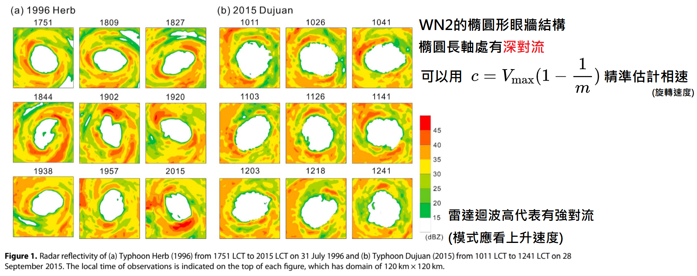
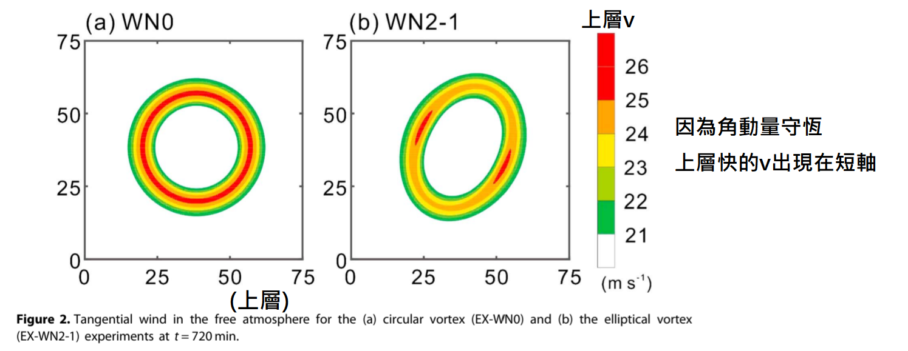
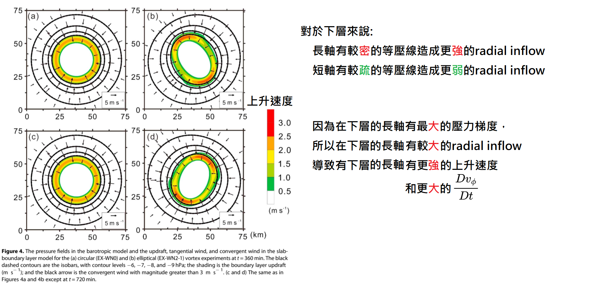

Polygonal Eyewall Asymmetries During the Rapid Intensification of Hurricane Michael (2018)#
Ting‐Yu Cha , Michael M. Bell , Wen‐Chau Lee , and Alexander J. DesRosiers
論文#
Abstract#
Polygonal eyewall asymmetries of Hurricane Michael (2018) during rapid intensification (RI) are analyzed from ground‐based single Doppler radar. Here, we present the first observational evidence of the evolving wind field of a polygonal eyewall during RI to Category \(5\) intensity by deducing the axisymmetric and asymmetric winds at \(5 \text{ min}\) intervals. Spectral time decomposition of the retrieved tangential wind structure shows quantitative evidence of low (\(1 \sim 4\)) azimuthal wavenumbers with propagation speeds that are consistent with linear wave theory on a radial vorticity gradient, suggesting the presence of rapidly evolving vortex Rossby waves. Dual‐Doppler winds from the NOAA P‐3 Hurricane Hunter airborne radar provide further evidence of the three‐dimensional vortex structure that supports growth of asymmetries during RI. Both reflectivity and tangential wind fields show polygonal structure and propagate at similar speeds, suggesting a close coupling of the dynamics and the convective organization during the intensification.
本研究利用陸基單都卜勒雷達（ground-based single Doppler radar），分析了 2018 年麥可颶風（Hurricane Michael）在 快速增強（rapid intensification, RI）期間的多邊形眼牆不對稱性。 在這裡，我們透過推導每 5 分鐘間隔的軸對稱與不對稱風場，提出了多邊形眼牆在快速增強至 5 級颶風強度期間，其 風場演變的首次觀測證據 。 對 反演出的切向風結構進行頻譜時間分解（Spectral time decomposition），顯示了低方位角波數（波數 1 到 4）的量化證據，其傳播速度與建立在徑向渦度梯度上的線性波理論相符，這表明了快速演變的渦旋羅斯貝波（vortex Rossby waves, VRWs）的存在。 來自 NOAA P-3 颶風獵人（Hurricane Hunter）機載雷達的雙都卜勒風場，提供了三維渦旋結構的進一步證據，該結構支持了快速增強期間不對稱性的成長。 雷達回波（reflectivity）與切向風場皆呈現出多邊形結構，並以相似的速度傳播，這表明在增強過程中，動力學與對流組織之間存在著緊密的耦合關係。
Plain Language Summary#
Understanding tropical cyclone (TC) structure and evolution are crucial for improving weather forecasts. Hurricane Michael (2018) was observed by radar imagery to have an evolving polygonal eyewall with elliptical, triangular, and square shapes during rapid intensification (RI). While polygonal eyewall shapes have been seen in previous hurricanes, the corresponding evolution of wind asymmetries has never been quantitatively deduced due to limitations from previous observations. Here, we present the first observational evidence of the evolving wind field of a polygonal eyewall during RI to Category 5 intensity by deducing the winds at 5‐min intervals from single‐Doppler Next Generation Weather Radar (NEXRAD) observations. The results highlight the value of coastal radar observations to investigate physical mechanisms of TC intensity and structure evolution and will help to improve intensity forecasts in the future.
了解熱帶氣旋（TC）的結構與演變對於改善天氣預報至關重要。透過雷達影像觀測發現，2018 年的麥可颶風（Hurricane Michael）在快速增強（RI）期間，其多邊形眼牆經歷了橢圓形、三角形與四邊形狀的演變。雖然過去也曾在其他颶風中看過多邊形眼牆的形狀，但受限於過往觀測技術的限制，這些風場不對稱性的對應演變，從未被定量推導出來。在此，我們透過單一都卜勒下一代天氣雷達（NEXRAD）的觀測，以 5 分鐘的間隔推導出風場，提出了多邊形眼牆在快速增強至 5 級強度期間，其風場演變的「首次觀測證據」。這些結果突顯了沿海雷達觀測在探討熱帶氣旋強度與結構演變物理機制上的價值，並將有助於未來改善強度的預報。
1. Introduction#
Tropical cyclone (\(\text{TC}\)) internal dynamics are a primary factor impacting the storm evolution in an environment that is favorable for rapid intensification (\(\text{RI}\)) [Hendricks et al., \(2010\)]. Inner core processes are intrinsically less predictable and more difficult to observe in detail than the larger scale environment, which makes forecasts of intensity change particularly challenging. The U.S. coastal Next Generation Weather Radar (\(\text{NEXRAD}\)) network provides continuous surveillance capability of \(\text{TCs}\) with high temporal and spatial resolution and can collect valuable data on \(\text{TC}\) evolution. The axisymmetric and asymmetric tangential winds are able to be retrieved using the Generalized Velocity Track Display (\(\text{GVTD}\)) technique with single ground-based Doppler radar data [Cha, \(2018\); Jou et al., \(2008\)], providing insights on the \(\text{TC}\) dynamics and evolution [Cha, \(2018\); W.-C. Lee & Bell, \(2007\); Shimada et al., \(2018\)]. Hurricane Michael (\(2018\)) was the first Category \(5\) hurricane to make landfall in the United States since Hurricane Andrew (\(1992\)) and caused extensive damage in Florida and Georgia [Beven et al., \(2019\)]. Satellite and radar imagery showed evidence of an evolving polygonal eyewall as Michael underwent \(\text{RI}\) during its approach to Florida. In this study, single-Doppler radar winds from a coastal radar and airborne dual-Doppler wind synthesis are analyzed to provide the first observational evidence of the kinematic structure of a polygonal eyewall during \(\text{RI}\) to Category \(5\) intensity.
Hendricks et al. (2010)
研究背景與發現 (Context & Finding)： 指出在有利於快速增強（RI）的環境中，熱帶氣旋（TC）的內部動力學（Internal dynamics） 是影響風暴演變的最主要因素。
科學挑戰 (Scientific Challenge)： 闡明內核過程（Inner core processes） 本質上比大尺度環境更難預測且難以詳細觀測，這也是導致氣旋強度變化預報特別具有挑戰性的根本原因。
Jou et al. (2008); Cha (2018)
研究方法 (Approach)： 發展並應用廣義速度航跡顯示（GVTD）技術，利用地面單一都卜勒雷達的高時空解析度觀測資料進行風場反演。
研究發現 (Finding)： 證實該技術能夠成功反演出熱帶氣旋的軸對稱（Axisymmetric）與不對稱（Asymmetric）切向風場，為評估熱帶氣旋的動力特徵與演變過程提供了關鍵的物理見解（相關動力學洞察亦見於 W.-C. Lee & Bell, 2007; Shimada et al., 2018）。
Beven et al. (2019)
研究對象與背景 (Subject & Context)： 完整記錄了 2018 年麥可颶風（Hurricane Michael） 的災情與氣候背景。該風暴是自 1992 年安德魯颶風（Hurricane Andrew）以來，首個登陸美國本土的 5 級颶風，在佛羅里達州和喬治亞州造成了災難性的破壞。
本研究 —— Cha et al. (2020)
研究方法 (Approach)： 結合使用美國沿海下一代天氣雷達網（NEXRAD）的地面單都卜勒雷達風場資料，並聯合氣象觀測飛機的機載雙都卜勒風場（Airborne dual-Doppler wind synthesis） 進行三維三維流場變分合成。
研究發現 (Finding)： 多邊形眼牆的幾何演變： 成功捕捉並對應了麥可颶風在逼近佛羅里達州、經歷快速增強（RI） 期間，其衛星與雷達回波上所顯現的不規則多邊形眼牆結構。
全球首份運動學實證： 為科學界提供了首份關於多邊形眼牆在快速增強至 5 級強度的極端過程中，其運動學結構（Kinematic structure）的實測不對稱風場演變證據。
Polygonal eyewalls are hypothesized to be the result of asymmetric vorticity dynamics that can modulate \(\text{TC}\) structure and intensity through counter-propagating vortex Rossby waves (\(\text{VRWs}\)) [Hendricks et al., \(2012\); Kuo et al., \(1999\), \(2016\); Muramatsu, \(1986\); Schubert et al., \(1999\)]. A sign reversal of the mean radial vorticity gradient that acts as a waveguide for \(\text{VRWs}\) satisfies the Rayleigh condition for barotropic-baroclinic instability [Montgomery & Shapiro, \(1995\)], which can lead to a breakdown of the potential vorticity (\(\text{PV}\)) ring and redistribution of eyewall \(\text{PV}\) and angular momentum [Bell & Montgomery, \(2008\); Schubert et al., \(1999\)] that can accelerate the mean wind inside the radius of maximum wind (\(\text{RMW}\)), and promote the contraction of the \(\text{RMW}\). The presence of a “ring” of mean vorticity that satisfies the Rayleigh condition can exist in both intensifying and weakening storms depending on intensity [Martinez et al., \(2017\)], suggesting that the vortex dynamics can be complex and \(\text{VRWs}\) may lead to intensification [Menelaou & Yau, \(2014\)], rapid weakening [Martinez et al., \(2019\)], or steady-state periods [Kossin & Eastin, \(2001\)]. [J.-D. Lee and Wu \(2018\)] hypothesized that polygonal eyewalls acted as a possible \(\text{RI}\) mechanism in Typhoon Megi (\(2010\)) by enhancing the generation of convective bursts inside the \(\text{RMW}\), which then affects the development of the warm-core in the upper tropopause and the vertical alignment of the eyewall. They concluded that maintaining a certain pattern of polygonal eyewall structures within the high inertial stability region for an extended period of time is beneficial to \(\text{RI}\).
Hendricks et al. (2012); Kuo et al. (1999, 2016); Muramatsu (1986); Schubert et al. (1999)
研究發現 (Finding)：假設多邊形眼牆是由不對稱渦度動力學（Asymmetric vorticity dynamics）所造成的結果 。這種動力學可透過反向傳播的渦旋羅斯貝波（Vortex Rossby waves, VRWs）來調節熱帶氣旋的結構與強度 。
Montgomery & Shapiro (1995); Bell & Montgomery (2008); Schubert et al. (1999)
風場動力學 (Wind Dynamics)：
瑞利條件與不穩定性：作為 VRWs 導波管（Waveguide）的平均徑向渦度梯度若發生符號反轉（Sign reversal），將滿足正壓-斜壓不穩定性（Barotropic-baroclinic instability）的瑞利條件（Rayleigh condition） 。
位勢渦度環崩潰：這會導致位勢渦度（Potential vorticity, PV）環崩潰，並促使眼牆的 PV 與角動量重新分佈 。
結構收縮：此過程能加速最大風速半徑（RMW）內部的平均風速，進而促進 RMW 的收縮（Contraction） 。
Martinez et al. (2017, 2019); Menelaou & Yau (2014); Kossin & Eastin (2001)
研究發現 (Finding)：滿足瑞利條件的平均渦度「環（Ring）」可以存在於增強或減弱的風暴中，這取決於氣旋本身的強度 。
綜合釋疑 (Synthesis)：這表明渦旋動力學非常複雜 。VRWs 可能導致多種完全不同的結果，包括：增強（Intensification）、快速減弱（Rapid weakening） 或維持穩定狀態（Steady-state periods） 。
J.-D. Lee and Wu (2018)
研究發現 (Finding)：提出假設，認為在 2010 年梅姬颱風（Typhoon Megi）中，多邊形眼牆可能作為一種促使快速增強（RI）的機制 。此結構能促進 RMW 內部產生對流爆發（Convective bursts），進而影響對流層頂部暖心（Warm-core）的發展以及眼牆的垂直對齊（Vertical alignment） 。
綜合結論 (Conclusion)：結論指出，若能在高慣性穩定度區域（High inertial stability region）內長時間維持某種特定模式的多邊形眼牆結構，將非常有利於熱帶氣旋的快速增強（RI） 。
Previous theoretical studies have often used a simplified barotropic nondivergent model framework to investigate the dynamical processes of polygonal eyewalls [Kuo et al., \(1999\), \(2016\); Rozoff et al., \(2009\); Schubert et al., \(1999\)]. While this framework can provide substantial insight, it has limitations in investigating eyewall dynamics as moist convective processes are very important to \(\text{PV}\) generation and the intensification process. Diabatic heating can be introduced as a proxy via a mass sink in shallow-water models [Hendricks et al., \(2012\), \(2014\)] or simulated directly in \(3\text{-D}\) full physics models [Wu et al., \(2016\)], but simulations may not represent the real-world physical mechanisms correctly. Utilizing observational data sets is critical to validate theory and numerical simulations and improve our understanding of polygonal eyewalls in \(\text{TCs}\) and the relation to intensity change. Prior studies have been limited in their ability to examine the dynamics of \(\text{VRWs}\) and polygonal eyewalls. Multi-Doppler airborne radar analyses [Reasor et al., \(2000\)] can retrieve the full wind field but have temporal sampling and aliasing limitations [Cha & Bell, \(2020\); Cha, \(2018\)]. Studies analyzing the shape of the eye in reflectivity [Itano & Hosoya, \(2013\)] or using reflectivity as a proxy for \(\text{PV}\) [Corbosiero et al., \(2006\)] have limitations due to the fact that the reflectivity may not be fully coupled with the winds or \(\text{PV}\) [Moon & Nolan, \(2015\)].
Kuo et al. (1999, 2016); Rozoff et al. (2009); Schubert et al. (1999)
研究方法 (Approach)： 過去的理論研究通常採用簡化的正壓無輻散模型（Simplified barotropic nondivergent model）架構，來探討多邊形眼牆的動力過程 。
研究限制 (Limitation)： 雖然此架構能提供豐富的物理見解，但在探討眼牆動力學時仍有侷限，因為濕對流過程（Moist convective processes）對於位勢渦度（PV）的生成與氣旋增強過程是至關重要的 。
Hendricks et al. (2012, 2014); Wu et al. (2016)
研究方法 (Approach)： 嘗試將非絕熱加熱（Diabatic heating）作為替代指標，透過質量匯（Mass sink）引入淺水模型（Shallow-water models）中 [Hendricks et al.] ；或者直接利用三維全物理模型（3-D full physics models）進行模擬 [Wu et al.] 。
綜合釋疑 (Synthesis)： 這些數值模擬可能無法完全正確地呈現真實世界的物理機制 。因此，利用實際觀測資料集來驗證理論與數值模擬，對於提升我們對熱帶氣旋多邊形眼牆及其與強度變化關聯的理解，是絕對關鍵的 。
Reasor et al. (2000); Cha & Bell (2020); Cha (2018)
研究方法 (Approach)： 利用多都卜勒機載雷達分析（Multi-Doppler airborne radar analyses）來反演熱帶氣旋完整的風場 [Reasor et al.] 。
研究限制 (Limitation)： 先前的研究在檢驗渦旋羅斯貝波（VRWs）與多邊形眼牆的動力學能力上受到限制 。這類機載雷達分析在時間採樣（Temporal sampling）與訊號混疊（Aliasing）上存在著先天的侷限性 [Cha & Bell; Cha] 。
Itano & Hosoya (2013); Corbosiero et al. (2006); Moon & Nolan (2015)
研究方法 (Approach)： 藉由分析雷達回波（Reflectivity）中所呈現的風眼形狀 [Itano & Hosoya] ，或是直接將雷達回波作為位勢渦度（PV）的替代指標來進行分析 [Corbosiero et al.] 。
研究限制 (Limitation)： 這些研究同樣具有侷限性，因為雷達回波在物理上可能無法與風場或位勢渦度（PV）達到完全耦合（Fully coupled）的狀態 [Moon & Nolan] 。
Analyses of Hurricane Michael (\(2018\)) presented herein demonstrate the first observation of high-order \(\text{VRW}\) propagation using tangential wind asymmetries as a proxy for the \(\text{PV}\) signal. The results show that the propagation speeds of the waves are consistent with linear wave theory on a vortex and help to provide new insight into physical mechanisms contributing to \(\text{TC}\) \(\text{RI}\). Section \(2\) describes the observing platform, quality control processes for the observations, and analysis methodology. Section \(3\) describes Michael’s evolution of reflectivity and tangential winds retrieved by the \(\text{GVTD}\) technique and discusses sampling limitations and the physical mechanisms contributing to Michael’s inner core variability. Conclusions and future work are presented in section \(4\).
本研究 —— Cha et al. (2020) （緒論總結）
研究貢獻與發現 (Contribution & Finding)：
針對 2018 年麥可颶風（Hurricane Michael）的分析，展示了高階渦旋羅斯貝波（VRW）傳播的首份觀測證據，研究中是利用切向風的不對稱性來作為位勢渦度（PV）訊號的替代指標 。
結果顯示，這些波動的傳播速度與渦旋的線性波理論（Linear wave theory）相符，這有助於為促成熱帶氣旋快速增強（RI）的物理機制提供全新的見解 。
論文架構 (Paper Structure)：
第 2 節：描述觀測平台、觀測資料的品質控制流程，以及分析方法學 。
第 3 節：描述透過 GVTD 技術反演所得之麥可颶風雷達回波與切向風的演變過程，並討論資料採樣的限制，以及促成麥可颶風內核變異性的物理機制 。
第 4 節：總結研究結論，並提出未來的研究展望 。
2. Data and Methods#

Hurricane Michael was within range of ground-based radar surveillance during its approach to the Florida panhandle and brought in devastating winds and storm surge to the coastal area near Mexico Beach and Tyndall Air Force Base (AFB). Figure \(1\) shows the track, intensity, environmental vertical wind shear (\(\text{VWS}\)) direction, and reflectivity evolution at \(3\text{ km}\). Michael intensified nearly continuously from genesis to landfall and experienced two \(\text{RI}\) periods during its life cycle. \(\text{RI}\) is defined as a \(24\text{-hr}\) increase in the maximum sustained wind of \(15.4\text{ m s}^{-1}\) (\(30\text{ kt}\)) [Kaplan & DeMaria, \(2003\)]. The second \(\text{RI}\) started on \(9\text{ October}\) and ended when the storm reached Category \(5\) intensity (\(140\text{ kt}\)) at the time of landfall around \(1730\text{ UTC}\) \(10\text{ October}\). After the landfall, Michael underwent a rapid weakening and extratropical transition as the \(\text{TC}\) moved into North Carolina. The analysis period for this study is from \(1000\) to \(1930\text{ UTC}\) \(10\text{ October}\) when the hurricane was within the coastal radar detection range. The deep layer \(200\text{-}\) to \(850\text{-hPa}\) \(\text{VWS}\) magnitude was about \(5\text{ m s}^{-1}\) with a transition from northwesternerly to south-southeasternerly during the analysis period.
麥可颶風在逼近佛羅里達州西北部狹長地帶（Florida panhandle）時，進入了地面雷達監測的範圍內，並為墨西哥海灘（Mexico Beach）與廷德爾空軍基地（Tyndall AFB）附近的沿海地區帶來了毀滅性的強風與風暴潮 。圖 1 展示了 \(3\text{ km}\) 高度的軌跡、強度、環境垂直風切（VWS）方向以及雷達回波的演變 。 麥可颶風從生成到登陸期間幾乎都在持續增強，並在其生命週期中經歷了兩次快速增強（RI）時期 。快速增強（RI）被定義為最大持續風速在 24 小時內增加 \(15.4\text{ m s}^{-1}\)（\(30\text{ kt}\)）[Kaplan & DeMaria, 2003] 。第二次快速增強始於 10 月 9 日，並在風暴於 10 月 10 日 1730 UTC 左右登陸時達到 5 級颶風強度（\(140\text{ kt}\)）而結束 。登陸後，隨著熱帶氣旋移入北卡羅萊納州，麥可颶風經歷了快速減弱與溫帶氣旋轉換過程 。本研究的分析期間為 10 月 10 日 1000 至 1930 UTC，此時颶風正好位於沿海雷達的偵測範圍內 。在分析期間，\(200\) 至 \(850\text{ hPa} 深層的垂直風切（VWS）強度約為 \)5\text{ m s}^{-1}$，其方向從西北風轉變為南南東風 。
Figure \(1\text{a}\) shows the \(\text{TC}\) tracks derived from three different methods: best track, \(\text{GVTD-simplex}\), and dynamic aircraft location. The best track centers are surface-based estimates from the National Hurricane Center (\(\text{NHC}\)) that consider satellite, ground-based radars, aircraft, and in situ measurements every \(6\text{ hr}\). The dynamic aircraft centers from the Hurricane Research Division (\(\text{HRD}\)) are derived from the NOAA P-3 (hereafter as P-3) in situ measurements of wind and geopotential height at \(700\text{hPa}\) [Willoughby & Chelmow, \(1982\)]. The \(\text{GVTD-simplex}\) objective centers are obtained from the radar data at \(3\text{ km}\) altitude using a simplex method to obtain a set of possible circulation centers [Lee et al., \(1999\); Lee & Marks, \(2000\)] that are selected by an objective algorithm [Bell & Lee, \(2012\)] to smooth the track and reduce the center uncertainty. The tracks derived from the three different methods have similar trends in the earlier period, while the dynamic centers show a trochoidal motion between \(1200\) and \(1400\text{ UTC}\). Two hours before landfall, the three tracks started to diverge, likely due to the difference in height of the estimates and the impact of surface friction and \(\text{VWS}\). In this study, we use the combination of \(\text{GVTD}\) objective centers from \(1000\) to \(1530\text{ UTC}\) and dynamic centers from \(1530\) to \(1930\text{ UTC}\) for the analysis because the \(\text{GVTD-simplex}\) algorithm cannot find the center accurately when the storm is too close to the radar.
圖 1a 展示了透過三種不同方法推導出的熱帶氣旋（TC）路徑：最佳路徑（best track）、GVTD-simplex，以及動態飛機定位（dynamic aircraft location）。最佳路徑中心是由國家颶風中心（NHC）提供的地表估算值，這些估算值綜合考量了衛星、地面雷達、飛機以及每 6 小時一次的實地觀測數據 。來自颶風研究部（HRD）的動態飛機中心，則是根據 NOAA P-3（以下簡稱 P-3）在 \(700\text{hPa}\) 高度測得的風場與地勢高度實地數據推導而來（Willoughby & Chelmow, 1982）。GVTD-simplex 客觀中心是利用 \(3\text{ km}\) 高度的雷達資料，透過單形法（simplex method）取得一組可能的環流中心（Lee et al., 1999; Lee & Marks, 2000），接著由客觀演算法（Bell & Lee, 2012）進行篩選，以平滑路徑並降低中心的不確定性 。 這三種方法推導出的路徑在早期階段具有相似的趨勢，而動態中心在 1200 至 1400 UTC 之間則顯示出擺線運動（trochoidal motion）。登陸前兩小時，這三條路徑開始產生分歧，這可能是由於估算高度的差異，以及地表摩擦力與垂直風切（VWS）的影響所致。在本研究中，我們結合使用了 1000 至 1530 UTC 的 GVTD 客觀中心，以及 1530 至 1930 UTC 的動態中心來進行分析，因為當風暴過於靠近雷達時，GVTD-simplex 演算法無法準確定位中心 。
Data from the \(\text{NEXRAD}\) radar in Eglin AFB, Florida (\(\text{KEVX}\)) were analyzed from \(1000\) to \(1930\text{ UTC}\) \(10\text{ October}\). The radar sweep files were processed with Lidar Radar Open Software Environment (\(\text{LROSE}\)) software [Bell, \(2019\)] and the National Center for Atmospheric Research (\(\text{NCAR}\)) SoloII software [Bell et al., \(2013\)] to correct Doppler velocity aliasing and remove the nonmeteorological echoes. The edited sweep files were then gridded using interpolation of the fields from plan position indicators (elevation angle, \(Y, Z\)) to constant-altitude plan position indicators in Cartesian coordinate (\(X, Y, Z\)). The gridded data were further analyzed by the Vortex Objective Radar Tracking and Circulation (\(\text{VORTRAC}\)) software, and the \(\text{GVTD}\) technique was used to retrieve the kinematic structure [Cha & Bell, \(2020\); Cha, \(2018\); Jou et al., \(2008\)]. The \(\text{GVTD}\) algorithm can retrieve the axisymmetric and asymmetric components of tangential winds and axisymmetric radial wind. Since the \(\text{GVTD}\) algorithm has no approximation to the geometry, the \(\text{GVTD}\)-derived higher wavenumbers will not be distorted in phase as long as the amplitude of that wavenumber can be detected by a Doppler radar.
我們分析了位於佛羅里達州埃格林空軍基地（Eglin AFB）的 NEXRAD 雷達（KEVX），在 10 月 10 日 1000 至 1930 UTC 期間的觀測資料 。雷達掃描檔使用了光達雷達開放軟體環境（LROSE）軟體 [Bell, 2019] 以及美國國家大氣研究中心（NCAR）的 SoloII 軟體 [Bell et al., 2013] 進行處理，以校正都卜勒速度混疊（velocity aliasing）並移除極端非氣象回波 。編輯後的掃描檔接著透過內插法，將平面位置顯示器（plan position indicators，即仰角、\(Y\)、\(Z\)）的場域，轉換為笛卡爾座標系（\(X, Y, Z\)）中的等高平面位置顯示器（constant-altitude plan position indicators, CAPPI）以進行網格化 。網格化後的資料進一步由渦旋客觀雷達追蹤與環流（VORTRAC）軟體進行分析，並使用 GVTD 技術來反演運動學結構 [Cha & Bell, 2020; Cha, 2018; Jou et al., 2008] 。GVTD 演算法能夠反演出切向風的軸對稱與不對稱分量，以及軸對稱的徑向風 。由於 GVTD 演算法對幾何形狀沒有進行近似處理，因此只要都卜勒雷達能夠偵測到該波數的振幅，GVTD 推導出的高階波數在相位上就不會發生失真 。
In addition to the ground-based radar data, the P-3 aircraft flew a reconnaissance mission from \(0800\) to \(1400\text{ UTC}\) \(10\text{ October}\) and collected high-resolution airborne Doppler radar data. The flight pass from \(1100\) to \(1130\text{ UTC}\) \(10\text{ October}\) is analyzed in detail for this study to examine the \(3\text{-D}\) kinematic structure from dual-Doppler synthesis using the \(\text{SAMURAI}\) variational analysis technique [Bell, Montgomery, et al., \(2012\)].
除了地面雷達資料外，P-3 觀測機也在 10 月 10 日 0800 至 1400 UTC 執行了偵察任務，並收集了高解析度的機載都卜勒雷達資料。本研究詳細分析了 10 月 10 日 1100 至 1130 UTC 的飛行航次，利用 SAMURAI 變分分析技術（variational analysis technique）進行雙都卜勒合成（dual-Doppler synthesis），以檢視其三維（3-D）運動學結構 [Bell, Montgomery, et al., 2012]。
3. Results#
Figure \(1\text{c}\) shows a sequence of reflectivity images on \(10\text{ October}\) that indicate intensification was accompanied by evolving reflectivity asymmetry. Hurricane Michael exhibited many noncircular eyewall shapes including ellipses, triangles, squares, and hexagons, which transitioned from low to high to low wavenumbers and then axisymmetrized. Most of the high-order features were short-lived, with the exception of an elliptical eyewall that was traceable for an hour (\(1030\text{--}1130\text{ UTC}\)) with reflectivity maximized near the ends of the major ellipse axis at \(1057\text{ UTC}\). An hour later, the elliptical eyewall evolved into a triangle shape with reflectivity maximized on the eastern side. The asymmetries continued rotating cyclonically along the eyewall, and the eyewall became an irregular shape associated with spiral bands circulating around the eye at \(1239\text{ UTC}\). Michael’s eyewall shape transitioned to a square at \(1420\text{ UTC}\), a quasi-triangle at \(1532\text{ UTC}\), and eventually axisymmetrized to a near round circle. After Michael made landfall at \(1730\text{ UTC}\), the reflectivity decreased in the southeast eyewall, while the northwestern quadrant had some of the highest reflectivity values during the analysis period exceeding \(45\text{ dBZ}\), suggesting an increasing impact of surface friction and shear.
圖 1c 展示了 10 月 10 日的一系列雷達回波影像，指出（颶風的）增強伴隨著不斷演變的回波不對稱性 。麥可颶風展現出許多非圓形的眼牆形狀，包含了橢圓形、三角形、四邊形與六邊形，其波數經歷了從低到高、再從高到低轉換的過程，最後趨於軸對稱 。大多數的高階（多邊形）特徵都很短暫，唯一例外的是一個 橢圓形眼牆，它可以被持續追蹤長達一小時（1030–1130 UTC），且在 1057 UTC 時，回波最大值出現在橢圓長軸的兩端附近 。一小時後，這個橢圓形眼牆演變成三角形，且回波最大值出現在東側 。這些不對稱結構持續沿著眼牆進行氣旋式旋轉，到了 1239 UTC 時，眼牆變成不規則形狀，並伴隨著環繞風眼的螺旋雨帶 。麥可的眼牆形狀在 1420 UTC 轉變為四邊形，在 1532 UTC 轉為準三角形，最終軸對稱化為一個接近圓形的結構 。在麥可於 1730 UTC 登陸後，東南側眼牆的回波減弱，而西北象限則出現了分析期間內超過 45 dBZ 的最高回波值，這表明地表摩擦力與風切的影響正在加劇 。

Figure \(2\) shows a time-radius diagram of retrieved wind and derived dynamical quantities. The wavenumber \(0\) (axisymmetric) tangential wind (Figure \(2\text{a}\)) generally intensified until landfall with a broadening outer wind field out to \(100\text{-km}\) radius. The mean tangential wind reached its maximum intensity (\(\sim 65\text{ m s}^{-1}\)) around \(1700\text{ UTC}\) then decayed due to land interaction and increasing shear throughout the rest of analysis period. Figures \(2\text{b}\) and \(2\text{c}\) show the evolution of eyewall axisymmetric vorticity and its radial gradient out to \(30\text{ km}\) radius. The corresponding amplitude of the wavenumber \(0\text{-}4\) tangential wind components is shown in Figure \(2\text{d}\), with the black line denoting the peak axisymmetric wind and bars denoting the asymmetric components. Due to the difference in magnitude of the asymmetric components, the normalized amplitude is shown in Figures \(2\text{e}\text{-}2\text{h}\) using the time-mean value of each wavenumber within the eyewall region as a normalization factor, such that \(V_{\text{norm}, m} = (V_m - \overline{V}_m) / \overline{V}_m\), where \(V_m\) is the instantaneous amplitude for each wavenumber \(m\) and \(\overline{V}_m\) is the time-mean value of the amplitude averaged between \(\text{RMW} - 5\text{ km}\) and \(\text{RMW} + 5\text{ km}\) from \(1000\) to \(1930\text{ UTC}\). The normalization more clearly visualizes the relative changes in asymmetric tangential wind with warm colors denoting enhanced asymmetries and cool colors denoting reduced asymmetries. The relative changes in asymmetric tangential wind are not very sensitive to the averaging radii.
圖 2 顯示了反演風場與衍生動力學物理量的時間-半徑圖 。波數 0（軸對稱）的切向風（圖 2a）在登陸前總體上持續增強，且外圍風場擴展至半徑 100 公里處 。平均切向風在 1700 UTC 左右達到最大強度（約 65 m/s），隨後由於陸地交互作用與不斷增加的風切，在分析期間的剩餘時間內逐漸衰減 。圖 2b 與 2c 顯示了半徑 30 公里內眼牆軸對稱渦度及其徑向梯度的演變 。對應的波數 0 到 4 切向風分量振幅顯示於圖 2d 中，其中黑線代表峰值軸對稱風速，長條圖則代表不對稱分量 。由於各不對稱分量的量值差異較大，圖 2e 至 2h 中展示了正規化（normalized）後的振幅，其使用眼牆區域內各波數的時間平均值作為正規化因子，公式為 \(V_{\text{norm}, m} = (V_m - \overline{V}_m) / \overline{V}_m\)，其中 \(V_m\) 為各波數 \(m\) 的瞬時振幅，\(\overline{V}_m\) 則是從 1000 至 1930 UTC 在最大風速半徑 RMW - 5 km 到 RMW + 5 km 之間平均的振幅時間平均值 。正規化能更清晰地視覺化不對稱切向風的相對變化，暖色調表示不對稱性增強，冷色調表示不對稱性減弱 。不對稱切向風的相對變化對用於平均的半徑範圍並不十分敏感 。
Early in the analysis period around \(1030\text{ UTC}\), the elliptical eyewall seen in the radar reflectivity (Figure \(1\text{c}\)) is also evident in the retrieved wavenumber \(2\) tangential wind component (Figure \(2\text{f}\)). By \(1130\text{ UTC}\), both wavenumber \(1\) and \(3\) components strengthened (Figures \(2\text{e}\) and \(2\text{g}\)). Between \(1200\) to \(1330\text{ UTC}\), the eyewall was dominated by a wavenumber \(1\) asymmetry that continued to intensify up to \(\sim 23\text{ m s}^{-1}\). Enhanced wavenumber \(1\) asymmetry is usually diagnosed as a result from the \(\text{VWS}\) impact, but the local \(\text{VWS}\) magnitude from the P-3 flight radar analysis was only \(2.9\text{ m s}^{-1}\), suggesting that \(\text{VWS}\) was not the cause of the increasing wavenumber \(1\) asymmetry. The \(\text{GVTD}\) analysis and P-3 in situ data suggest that wavenumber \(1\) asymmetries seemed more likely to be connected to internal processes in the inner core due to the presence of a trochoidal oscillation of the center at this time. Around \(1300\text{ UTC}\) as the wavenumber \(1\) was near its maximum amplitude, the higher order asymmetries were suppressed, and the mean vorticity in the inner core decreased slightly. The analysis shows an appearance of a sign reversal of the mean radial vorticity gradient inside the \(\text{RMW}\) around \(1230\text{ UTC}\), suggesting the onset of dynamic instability.
在分析期間的早期，大約 1030 UTC，在雷達回波（圖 1c）中觀察到的橢圓形眼牆，同樣也明顯地呈現在反演的波數 2 切向風分量中（圖 2f）。到了 1130 UTC，波數 1 與波數 3 分量皆有所增強（圖 2e 與 2g）。在 1200 至 1330 UTC 之間，眼牆由波數 1 的不對稱性所主導，並持續增強至約 \(\sim 23\text{ m s}^{-1}\)。波數 1 不對稱性的增強通常被診斷為垂直風切（VWS）影響的結果，但來自 P-3 飛行雷達分析的局部垂直風切量值僅為 2.9 m/s，這表明垂直風切並非導致波數 1 不對稱性增加的原因。GVTD 分析與 P-3 實地觀測資料顯示，由於此時中心出現了擺線振盪（trochoidal oscillation），波數 1 的不對稱性似乎更可能與內核的內部動力過程有關。大約在 1300 UTC，當波數 1 接近其最大振幅時，較高階的不對稱性受到抑制，且內核的平均渦度略微下降。分析顯示，大約在 1230 UTC 時，最大風速半徑（RMW）內側出現了平均徑向渦度梯度的符號反轉（sign reversal），這暗示了動力不穩定性（dynamic instability）的肇始。
One hypothesis for the wavenumber \(1\) asymmetry evolution as an algebraic instability was proposed by Smith and Rosenbluth (\(1990\)) and Nolan and Montgomery (\(2000\)). The algebraic instability is different from the barotropic instability, and the initial condition requires the initial perturbation vorticity to be inside of the angular velocity maximum for the growth to occur. Enhanced eye-eyewall mixing by the prior wavenumber \(2\) and \(3\) asymmetries may have provided that initial perturbation vorticity, but due to the lack of scatterers in the eye, we cannot verify whether that was the case. Nolan and Montgomery (\(2000\)) showed that the presence of a wavenumber \(1\) algebraic instability causes the \(\text{TC}\) center to have trochoidal motion with respect to the time-averaged motion vector. The dynamic centers derived from aircraft in situ winds (Figure \(1\text{a}\)) show a trochoidal motion from \(1223\) to \(1430\text{ UTC}\) that is consistent with the theoretical growth of this instability.
關於波數 1 不對稱性演變為一種代數不穩定性（algebraic instability）的假設，是由 Smith 和 Rosenbluth (1990) 以及 Nolan 和 Montgomery (2000) 所提出的。代數不穩定性不同於正壓不穩定性（barotropic instability），其初始條件要求初始擾動渦度必須位於角速度最大值內側，才能使其發生增長。先前波數 2 與 3 不對稱性所增強的眼-眼牆混合（eye-eyewall mixing），可能提供了該初始擾動渦度，但由於風眼內缺乏散射體（scatterers），我們無法驗證實際情況是否如此。Nolan 和 Montgomery (2000) 指出，波數 1 代數不穩定性的存在，會導致熱帶氣旋中心相對於時間平均移動向量產生擺線運動（trochoidal motion）。由飛機實地風場推導出的動態中心（圖 1a），在 1223 至 1430 UTC 之間顯示出擺線運動，這與該不穩定性的理論增長現象相符。
Between \(1330\) and \(1500\text{ UTC}\), high wavenumbers \(3\) and \(4\) grew in amplitude as the wavenumber \(1\) amplitude decreased. The \(\text{RMW}\) contracted during this period and the mean vorticity in the inner core strengthened to greater than \(6 \times 10^{-3}\text{ s}^{-1}\). At \(1532\text{ UTC}\), the eyewall reflectivity pattern was triangular (Figure \(1\text{c}\)), consistent with the retrieved wavenumber \(3\) wind asymmetry at this time. Subsequently, Michael gradually axisymmetrized as the mean vortex intensified and the asymmetric components of tangential wind weakened by \(1630\text{ UTC}\). The \(\text{RMW}\) then began to expand, and the magnitude of asymmetries increased again as the hurricane continued the northeastward trajectory and started to be impacted by the land interaction. Michael made landfall at \(1730\text{ UTC}\) as the environmental \(\text{VWS}\) concurrently intensified and the hurricane intensity weakened significantly.
在 1330 至 1500 UTC 之間，隨著波數 1 振幅減小，高階波數 3 與 4 的振幅隨之增長。在此期間，最大風速半徑（RMW）發生收縮，且內核的平均渦度增強至大於 \(6 \times 10^{-3}\text{ s}^{-1}\)。在 1532 UTC 時，眼牆的雷達回波型態呈現三角形（圖 1c），這與此時反演出來的波數 3 風場不對稱性相吻合(可能是位渦混和的過程)。隨後，隨著平均渦旋增強，切向風的不對稱分量在 1630 UTC 前逐漸減弱，麥可颶風也逐漸趨於軸對稱化（axisymmetrized）。接著，隨著颶風繼續朝東北軌跡移動並開始受到陸地交互作用的影響，RMW 開始擴張，且不對稱性的量值再次增加。麥可颶風於 1730 UTC 登陸，同時環境垂直風切（VWS）增強，導致颶風強度顯著減弱。

The analysis of Michael’s inner core evolution suggests that the asymmetric \(\text{VRW}\) dynamics played an important role in modulating the structure and intensity changes. As described in section \(1\), previous observational analyses have yet to document the high-wavenumber kinematic structure propagation due to lack of both high spatial and temporal resolution data. Here, we use the \(\text{GVTD}\) retrieved asymmetric tangential winds as a proxy for vorticity and utilize the high temporal resolution to estimate the azimuthal propagation speed. Figure \(3\text{a}\) shows an azimuth-time diagram of wavenumber \(2\) wind near the \(\text{RMW}\) during the period with a rotating elliptical eyewall. There is a clear cyclonic propagation of the wavenumber \(2\) amplitude during this time. Concurrent with this propagation, the mean vorticity structure derived from both \(\text{P-3}\) dual-Doppler and single-Doppler radar analysis (Figure \(3\text{b}\)) shows a steep vorticity gradient at the inner edge of the eyewall that would support \(\text{VRW}\) propagation. There is a good agreement in the retrieved axisymmetric vorticity across all radii, providing confidence in the radar analysis for investigating the vortex dynamics.
對麥可颶風內核演變的分析顯示，不對稱渦旋羅斯貝波（VRW）動力學在調節結構與強度變化上扮演了重要角色。如第 1 節所述，由於缺乏高時空解析度的資料，過去的觀測分析尚未能記錄高波數運動學結構的傳播。在此，我們使用 GVTD 反演出的不對稱切向風作為渦度的替代指標，並利用高時間解析度來估算方位角的傳播速度。圖 3a 顯示了在旋轉橢圓形眼牆期間，靠近最大風速半徑（RMW）處波數 2 風場的方位角-時間圖。在此期間，波數 2 的振幅有明顯的氣旋式傳播。與此傳播同時，由 P-3 雙都卜勒與單都卜勒雷達分析推導出的平均渦度結構（圖 3b），顯示在 眼牆內緣存在一個陡峭的渦度梯度，這將能支持 VRW 的傳播。在所有半徑範圍內，反演出來的軸對稱渦度均具有良好的一致性，這為利用雷達分析來探討渦旋動力學提供了信心。
The enhanced sensitivity and pseudo dual-Doppler scanning strategy of the \(\text{P-3}\) allow for a retrieval of the full axisymmetric kinematic structure at the time of the aircraft penetration (from \(1100\) to \(1130\text{ UTC}\) \(10\text{ October}\)). Figure \(3\text{c}\) shows the radius-height azimuthal mean structure of vorticity, tangential wind, and secondary circulation. A local maximum of vorticity exceeding \(9 \times 10^{-3}\text{ s}^{-1}\) is evident in the low levels, with a tower of positive vorticity extending to the upper troposphere. An updraft maximum in the upper levels suggests an ongoing development of the vorticity tower in the vertical. Due to the enhanced sensitivity of the \(\text{P-3}\) radar in the storm, a reversal in the vorticity gradient at the inner edge of the eyewall is captured by the dual-Doppler analysis at upper levels and can be inferred at low levels (Figure \(3\text{d}\)). The couplet of positive and negative radial gradient of vorticity satisfies the Rayleigh condition for barotropic instability that could support the exponential growth of higher order asymmetries. The tightly packed angular momentum surfaces in Figure \(3\text{d}\) are nearly upright in low levels and slant outward in approximate congruence with the secondary circulation at upper levels.
P-3 的高靈敏度與偽雙都卜勒（pseudo dual-Doppler）掃描策略，使得在飛機穿越風暴期間（10 月 10 日 1100 至 1130 UTC）能夠反演出完整的軸對稱運動學結構。圖 3c 顯示了渦度、切向風與次級環流的半徑-高度方位角平均結構。在低層可以明顯看到超過 \(9 \times 10^{-3}\text{ s}^{-1}\) 的渦度局部極大值，並有一道正渦度塔（tower of positive vorticity）延伸至對流層高層。高層的上升氣流極大值暗示著這座渦度塔在垂直方向上正在持續發展。由於 P-3 雷達在風暴中具有較高的靈敏度，雙都卜勒分析在高層捕捉到了眼牆內緣渦度梯度的反轉（reversal in the vorticity gradient），並可在低層推斷出此現象（圖 3d）。渦度之正負徑向梯度偶（couplet）滿足了正壓不穩定性（barotropic instability）的瑞利條件（Rayleigh condition），這能夠支持高階不對稱性的指數增長。圖 3d 中緊密排列的角動量面在低層幾乎是直立的，並在高層向外傾斜，與次級環流大致吻合。
The elliptical and triangle eyewall patterns are hypothesized to be the result of combined barotropic/baroclinic instability. The presence of the hollow vorticity tower during that period (Figure \(3\)) suggests that wavenumber \(2\) and \(3\) modes could grow via barotropic/baroclinic instability [Terwey & Montgomery, \(2002\)] and result in vorticity mixing between the eye and eyewall. This vorticity mixing can transport the perturbation vorticity into the core and can lead to weakening of the symmetric vortex. In Hurricane Michael, however, sustained deep convection and vortex stretching were evidently able to maintain and intensify the symmetric vorticity tower despite the growth of asymmetric perturbations.
橢圓形與三角形的眼牆型態被假設為正壓/斜壓不穩定性（barotropic/baroclinic instability）結合所造成的結果。在此期間 中空渦度塔（hollow vorticity tower）的存在（圖 3）表明，波數 2 與 3 的模態可以透過正壓/斜壓不穩定性增長 [Terwey & Montgomery, 2002]，並 導致風眼與眼牆之間的渦度混合（vorticity mixing）。這種渦度混合能將擾動渦度（perturbation vorticity）傳輸至核心，並可能導致對稱渦旋（symmetric vortex）的減弱。然而，在麥可颶風中，儘管不對稱擾動有所增長，持續的深對流（deep convection）與渦旋伸展（vortex stretching）顯然能夠維持並增強對稱渦度塔。

Power spectrum analyses in the frequency domain of the tangential wind and reflectivity were performed in order to calculate the propagation speed of the asymmetries quantitatively (Figures \(4\text{a}\) and \(4\text{b}\)). In the supporting information \(\text{S1}\), we provide the details of the power spectrum analysis. The asymmetric tangential winds have clearly separated spectral peaks that correspond to different azimuthal propagation speeds. The asymmetric reflectivity spectra have distinguishable peaks for the propagation signals for low wavenumbers (\(m = 1\) and \(2\)), whereas the high wavenumber signals (\(m > 2\)) are noisier and have multiple peaks of signal making it harder to recognize the propagation velocity.
為了定量計算不對稱性的傳播速度，我們在頻域（frequency domain）中對 切向風與雷達回波進行了功率譜分析（power spectrum analyses）（圖 4a 與 4b）。在補充資料 S1 中，我們提供了功率譜分析的細節。不對稱切向風具有明顯分離的頻譜峰值（spectral peaks），這些峰值對應於不同的方位角傳播速度。不對稱雷達回波頻譜在低波數（\(m = 1\) 與 \(2\)）的傳播訊號上具有可辨識的峰值，而高波數訊號（\(m > 2\)）則充滿較多雜訊，並具有多個訊號峰值，這使得傳播速度較難以辨識。
Figures \(4\text{c}\) and \(4\text{d}\) display the theoretical speed calculated from Equation \(\text{S1}\) and the observed speed. The strongest power of each wavenumber is selected as the observed \(\text{VRW}\) propagation velocity. In the supporting information \(\text{S1}\), we provide the derivation of azimuthal velocity of each wavenumber. The observed values are remarkably consistent with the linear wave theory, suggesting that the observed asymmetries are well described by \(\text{VRW}\) theory. Moreover, the propagation speeds of asymmetric reflectivity signals are also consistent with the linear wave theory (Figure \(4\text{d}\)) despite the broader power spectra. The observed asymmetric propagation of both wind and reflectivity provides further support for the theoretical framework of linear wave theory, suggesting that nonlinear wave interaction may be of secondary importance in the propagation speed.
圖 4c 與 4d 顯示了由方程式 S1 計算出的理論速度與觀測速度。各波數的最強功率被選為觀測到的 VRW 傳播速度。在補充資料 S1 中，我們提供了各波數方位角速度的推導過程。觀測值與線性波理論驚人地一致，這表明觀測到的不對稱性可以由 VRW 理論很好地描述。此外，儘管不對稱雷達回波訊號的功率譜較寬，其傳播速度也與線性波理論相符（圖 4d）。風場與雷達回波觀測到的不對稱傳播，為線性波理論的理論架構提供了進一步的支持，這暗示在傳播速度上，非線性波交互作用（nonlinear wave interaction）可能只居於次要地位。
The similar propagation speed of tangential wind and reflectivity at the altitude of \(3\text{ km}\) implies that the vorticity and divergence fields are coupled together in the low to mid-troposphere. Due to sampling limitations of the radar beam, it is unclear whether this coupling originates in the boundary layer or is only in the free troposphere. Kuo et al. (\(2016\)) used a nondivergent barotropic model for the free atmosphere and an asymmetric slab boundary layer underneath and found a tangential wind maximum at the minor axis of the elliptic vortex in the free atmosphere, whereas the wind maximum was closer to the major axis within the boundary layer. In a real, baroclinic vortex that decays with height, the theoretical wave speed for \(\text{VRWs}\) is height dependent such that a vertically coherent asymmetry that propagates at the same speed over some depth will deviate from the theory at different levels. While Michael’s symmetric vorticity tower was quite strong through the depth of the troposphere (Figure \(3\text{c}\)), the mean flow still decayed with height suggesting barotropic theory cannot fully describe the evolution. The good correspondence between theoretical and observed wave speeds does indicate that barotropic theory is a reasonable approximation in this case.
在 3 公里高度，切向風與雷達回波具有相似的傳播速度，這意味著渦度與輻散場在中低對流層是耦合在一起的。由於雷達波束的採樣限制，目前尚不清楚這種耦合是起源於邊界層，還是僅存在於自由對流層。Kuo 等人 (2016) 在自由大氣中使用無輻散正壓模型，並在其下方搭配不對稱平板邊界層，發現自由大氣中橢圓形渦旋的切向風最大值位於短軸，而邊界層內的風速最大值則較靠近長軸。在一個隨高度衰減的真實斜壓渦旋（baroclinic vortex）中，VRWs 的理論波速與高度有關，因此在某段深度內以相同速度傳播的垂直連貫不對稱性，會在不同高度上偏離理論值。雖然麥可颶風的對稱渦度塔貫穿了整個對流層深度且相當強勁（圖 3c），但平均氣流仍隨高度衰減，這表明正壓理論無法完全描述其演變。然而，理論波速與觀測波速之間的良好對應確實表明，在這種情況下，正壓理論是一個合理的近似。
Previous studies have shown that the vortex structure and the location of diabatic heating play important roles in the intensification of \(\text{TCs}\) [Schubert & Hack, \(1982\)]. Latent heat release is the leading order effect in \(\text{PV}\) generation in the \(\text{TC}\) inner core and \(\text{VRWs}\) can transport the diabatically generated \(\text{PV}\) inward [Chen & Yau, \(2001\)]. In barotropic models, mixing associated with \(\text{VRW}\) activity leads to weakening of the symmetric vortex. The simultaneous amplification of symmetric vortex (Figure \(2\text{b}\)) and cycles of intensification and weakening of asymmetries (Figure \(3\text{d}\)) throughout the \(\text{RI}\) stage suggest that the asymmetries are not necessarily a negative impact on \(\text{TC}\) intensification, consistent with the recent study by J.-D. Lee and Wu (\(2018\)). Whether the vortex would have intensified even more rapidly in the absence of the asymmetries is unknown and remains to be explored with numerical modeling in future work.
先前的研究表明，渦旋結構與非絕熱加熱（diabatic heating）的位置在熱帶氣旋的增強中扮演著重要角色 [Schubert & Hack, 1982]。潛熱釋放是熱帶氣旋內核產生 PV 的首要效應，而 VRWs 能夠將非絕熱產生的 PV 向內傳輸 [Chen & Yau, 2001]。在正壓模型中，與 VRW 活動相關的混合會導致對稱渦旋減弱。在整個快速增強（RI）階段，對稱渦旋的同時放大（圖 2b）以及不對稱性的增強與減弱循環（圖 3d），表明不對稱性對熱帶氣旋的增強不一定有負面影響，這與 J.-D. Lee 和 Wu (2018) 最近的研究一致。在沒有不對稱性的情況下，渦旋是否會增強得更快，目前仍是未知的，有待未來透過數值模擬進一步探討。
4. Conclusion#
The structure and evolution of Hurricane Michael were examined using single-Doppler radar observations, providing the first observational evidence of the evolving wind field of a polygonal eyewall during \(\text{RI}\) to Category \(5\) intensity. Quantitative evidence of growing structures with low (\(1\text{-}4\)) azimuthal wavenumbers in the tangential wind and reflectivity fields suggests the presence of rapidly evolving \(\text{VRWs}\). A spectral time decomposition analysis of the retrieved winds indicates that the propagation speeds of different \(\text{VRWs}\) are consistent with linear wave theory on a symmetric radial vorticity gradient. The appearance and growth of the asymmetries are proposed to be the result of a combination of wavenumber \(1\) algebraic instabilities and higher order barotropic/baroclinic instabilities. Aircraft center fixes document a period of trochoidal motion with an enhanced wavenumber \(1\) asymmetry when all other higher wavenumber asymmetries were suppressed. A period of higher order \(\text{VRW}\) growth followed as the mean radial vorticity gradient amplified and the hollow vortex tower contracted, eventually becoming nearly symmetric prior to landfall. The simultaneous amplification of the symmetric vortex and cycles of growth and decay of asymmetries suggest that they were closely coupled. After Michael made landfall, both wind intensity and minimum pressure weakened significantly, and the asymmetries increased due to land friction and increasing vertical wind shear.
本研究利用單都卜勒雷達觀測資料檢視了麥可颶風（Hurricane Michael）的結構與演變，為多邊形眼牆在快速增強（RI）至 5 級強度期間的風場演變，提供了首份觀測證據。切向風與雷達回波場中低方位角波數（1-4）增長結構的量化證據，表明了快速演變的渦旋羅斯貝波（VRWs）的存在。對反演風場進行的頻譜時間分解分析指出，不同 VRWs 的傳播速度與建立在對稱徑向渦度梯度上的線性波理論（Linear wave theory）相符。
不對稱性的出現與成長，被推測是波數 1 代數不穩定性（Algebraic instabilities）與更高階的正壓/斜壓不穩定性（Barotropic/baroclinic instabilities）結合的結果。 飛機中心定位記錄了一段伴隨波數 1 不對稱性增強的擺線運動（Trochoidal motion）時期，此時所有其他更高波數的不對稱性皆受到抑制。隨後，隨著平均徑向渦度梯度擴大與中空渦度塔收縮，出現了一段高階 VRW 成長的時期，並在登陸前最終變得近乎對稱。對稱渦旋的同時放大，以及不對稱性成長與衰減的循環，表明它們之間存在著緊密的耦合（Coupled）關係。在麥可颶風登陸後，風速強度與最低氣壓皆顯著減弱，且由於陸地摩擦與垂直風切的增加，不對稱性也隨之擴大。
The results presented here highlight the value of coastal radar observations to investigate physical mechanisms of \(\text{TC}\) intensity and structure evolution with high temporal and spatial resolution. Airborne dual-Doppler radar analysis supports the single-Doppler wind retrievals and documents the vertical structure of the growing vorticity tower, indicating the necessary condition for barotropic/baroclinic instability. The evolution of the vorticity gradient derived from the single-Doppler analysis further presents new insights on intensity and structure change, which will help to improve \(\text{TC}\) forecasts in the future. In addition, both the reflectivity and tangential winds show evidence of polygonal structure and propagate at a similar speed, indicating that the vorticity and divergence fields are closely coupled together. The interaction between the asymmetric vortex dynamics and diabatic generation of \(\text{PV}\) by the convection may play a salient role in \(\text{RI}\) and is an important topic for future research.
這裡呈現的結果突顯了沿海雷達觀測的價值，其具備高時空解析度，能用於探討熱帶氣旋（TC）強度與結構演變的物理機制。機載雙都卜勒雷達分析支持了單都卜勒的風場反演結果，並記錄了成長中的渦度塔（vorticity tower）垂直結構，指出了正壓/斜壓不穩定性（barotropic/baroclinic instability）的必要條件。由單都卜勒分析推導出的渦度梯度演變，進一步為強度與結構變化提供了新的見解，這將有助於未來改善熱帶氣旋的預報。此外，雷達回波與切向風皆呈現出多邊形結構的證據，並且以相似的速度傳播，這表明渦度場與輻散場是緊密耦合（coupled）在一起的。不對稱渦旋動力學與對流非絕熱生成位勢渦度（PV）之間的交互作用，可能在快速增強（RI）中扮演著顯著的角色，這也是未來研究的一個重要課題。
Data Availability Statement#
The data used in this paper are available through zenodo: https://doi.org/10.5281/zenodo.3928704.
AI#
同學你好！沒問題，這是一篇非常精彩且較為近期的實測論文摘要（關於 2018 年麥可颶風）。它剛好完美呼應了我們前面讀過的所有理論與數值模型——這次科學家是直接拿真實的高解析度雷達觀測資料，來印證「多邊形眼牆」與「渦旋羅斯貝波（VRW）」的關係！
我為你準備了流暢的學術翻譯，並延續我們之前的「資訊區塊化」風格，幫你把這段摘要的精華解構出來：
⚙️ 實例化與結構重組 (Dynamics & Core Findings)#
這篇摘要是標準的「觀測實證型」文獻，它的邏輯非常清晰：用新儀器/新技術 \(\rightarrow\) 看到新現象 \(\rightarrow\) 證明舊理論。我將其拆解為以下四個核心區塊：
【研究背景與資料來源 (Background & Data Source)】
研究對象：2018 年麥可颶風（Hurricane Michael）。
特殊階段：鎖定其「快速增強（RI）」至 5 級颶風的關鍵時期。
觀測工具：
陸基單都卜勒雷達（主資料）。
NOAA P-3 颶風獵人機載雷達（提供雙都卜勒的三維風場作為輔助與驗證）。
【分析方法 (Analytical Approach)】
高時間解析度推導：以極短的 5 分鐘為間隔，連續推導出風場中的「軸對稱（Symmetric）」與「不對稱（Asymmetric）」分量。
頻譜時間分解 (Spectral time decomposition)：將複雜的切向風資料轉換到頻譜空間，以精準分離出不同的波數（Wave numbers）特徵。
【核心發現與物理機制 (Core Findings & Physical Mechanisms)】 這部分完美印證了我們先前討論的 Kuo et al. (1999) 雙層模型理論！
低波數特徵：在切向風場中，明確量化出了低方位角波數（波數 1 到 4，對應到偏心、橢圓、三角形、四邊形）的不對稱結構。
相速與理論吻合：這些波動的「傳播速度」，與建立在徑向渦度梯度上的線性波理論（Linear wave theory）完全一致。
機制確認：這提供了強而有力的觀測鐵證，證實了眼牆中確實存在快速演變的渦旋羅斯貝波 (Vortex Rossby waves, VRWs)。
【綜合結論 (Final Conclusion)】
三維結構支持：機載雷達的三維資料證實，眼牆的渦旋結構在快速增強（RI）期間，提供了讓這些不對稱性得以「成長」的絕佳環境。
動力與對流的完美耦合 (Coupling of Dynamics and Convection)：
現象：雷達回波（代表對流/降水實體）與切向風場（代表純動力特徵）不約而同地都呈現出「多邊形結構」，且兩者旋轉傳播的速度幾乎相同。
意義：這表明在颶風快速變強的過程中，流體動力學（VRWs 的旋轉）與熱力學上的對流組織（邊界層的深對流）是緊密綁定、互相耦合的整體系統。
同學，我們繼續往下看！這段是論文的「白話文摘要（Plain Language Summary）」。近年來許多頂級期刊（如 AGU 系列）都會要求作者寫一段沒有艱澀行話的摘要，讓一般大眾或跨領域學者也能快速了解這篇研究「到底做了什麼了不起的事」。
⚙️ 實例化與結構重組 (Core Insights & Implications)#
這段白話文摘要雖然簡短，但它精準地交代了這篇論文的「賣點」與「科學貢獻」。我為你將其解構為以下三個核心區塊：
【研究動機與現象 (Motivation & Phenomenon)】
大氣預報的終極目標：精準掌握熱帶氣旋的結構與演變機制，是提升預報準確度的核心關鍵。
獨特的觀測個案：2018 年的麥可颶風在經歷「快速增強（RI）」的過程中，其眼牆形狀並非單純的圓形，而是不斷在橢圓形、三角形與四邊形之間演變。
【科學突破與觀測創舉 (Scientific Breakthrough)】
過去的痛點：以前的科學家雖然「看過」多邊形眼牆，但因為觀測解析度不夠，一直無法把背後不對稱的「風場演變」給精準量化算出來。
本研究的創舉：作者利用 NEXRAD 沿海雷達資料，達成了每 5 分鐘推導一次風場的超高時間解析度。這為多邊形眼牆在增強至 5 級颶風的過程中，提供了全世界第一份定量的風場演變觀測證據。
【實際應用價值 (Practical Value)】
觀測工具的肯定：證明了「沿海單一都卜勒雷達」在捕捉颱風/颶風內部極端物理機制上，具備不可取代的價值。
未來展望：這些觀測到的動力學機制，最終將能回饋給氣象單位，實質改善未來熱帶氣旋強度的預報能力。
沒問題，我們順利進入第二節「資料與方法（Data and Methods）」。這段落主要在交代這場極端風暴的生命史，以及雷達觀測的時空背景。
我為你將這段文字翻譯成流暢的學術中文，並將文獻中簡單的數值與單位（如 3 km、15.4 m/s）還原為純文字格式，避免過度使用 LaTeX 造成閱讀干擾。接著，我會用你習慣的「實例化與結構重組」方式來提煉重點：
⚙️ 實例化與結構重組 (Observation Target & Environment)#
這段落是建立後續所有動力學分析的「舞台背景」，我為你將這些重要的時空與環境參數區塊化如下：
【風暴生命史與強度特徵 (Storm Evolution & Intensity)】
演變特徵：麥可颶風在其生命週期中，經歷了罕見的幾乎連續性增強，並包含了兩次快速增強（RI）過程 。
RI 客觀定義：熱帶氣旋的最大持續風速，必須在 24 小時內急遽增加 15.4 m/s（30 kt） 以上 。
巔峰與登陸：第二次 RI 階段直接將風暴推向巔峰，使其在 10 月 10 日 1730 UTC 登陸佛羅里達州時，達到毀滅性的 5 級颶風強度（140 kt） 。登陸後隨即快速減弱並轉化為溫帶氣旋 。
【觀測時空窗與環境條件 (Observation Window & Environmental Conditions)】
雷達觀測範圍：鎖定颶風逼近佛羅里達狹長地帶（包含墨西哥海灘與廷德爾空軍基地）的關鍵海域 。
精確分析時間窗 (Analysis Period)：10 月 10 日 1000 至 1930 UTC 。這段時間正是風暴處於最高強度、且完全被地面雷達網覆蓋的黃金觀測期 。
大尺度環境風切 (Vertical Wind Shear, VWS)：在分析期間，深層（200 至 850 hPa）的垂直風切強度約維持在 5 m/s，風向則由西北風逐漸順轉為南南東風 。這是一個相對有利於熱帶氣旋維持或增強的中低度風切環境。
沒問題！這段文獻非常關鍵，因為在研究熱帶氣旋的「內核動力學」時，「中心定在哪裡」會直接決定後續風場反演的準確度。作者在這裡詳細比較了三種不同的風暴中心定位方法，並解釋了他們最終採用的混合策略。
⚙️ 實例化與結構重組 (Center Tracking Methods & Analysis Strategy)#
我們將這段文獻中提到的三種追蹤方法與研究策略，整理成清晰的對照結構：
三種風暴中心定位方法比較 (Comparison of Tracking Methods)
最佳路徑 (Best Track)
資料來源 (Source)：國家颶風中心（NHC）。
定位特徵 (Characteristics)：基於地表的估算值，綜合考量衛星、地面雷達與飛機數據，時間解析度較粗（每 6 小時一次）。
動態飛機中心 (Dynamic Aircraft Center)
資料來源 (Source)：颶風研究部（HRD）利用 NOAA P-3 觀測機的實地數據推導 。
定位特徵 (Characteristics)：基於 700 hPa（中低層）高度的風場與地勢高度數據計算而成，能捕捉到更高頻的中心運動 。
GVTD-simplex 客觀中心 (GVTD-simplex Objective Center)
資料來源 (Source)：利用 3 公里高度的地面雷達觀測資料 。
演算法邏輯 (Algorithm Logic)：先透過單形法（Simplex method）找出一組可能的環流中心，再經由客觀演算法篩選，達到平滑路徑與顯著降低不確定性的效果 。
軌跡演變與本研究之策略 (Track Evolution & Analysis Strategy)
軌跡特徵與分歧 (Track Features & Divergence)
早期一致性：三種方法在觀測初期呈現出相似的軌跡趨勢 。
擺線運動 (Trochoidal motion)：動態中心在 1200 至 1400 UTC 之間捕捉到了風眼的「擺線運動（搖擺現象）」。
登陸前分歧：登陸前 2 小時三條路徑開始分歧，這主要歸因於三種方法的估算高度不同，以及近岸時地表摩擦力與垂直風切（VWS）的不對稱影響 。
本研究的混合定位策略 (Hybrid Tracking Strategy)
1000 - 1530 UTC：採用 GVTD 客觀中心 。
1530 - 1930 UTC：切換為採用 動態飛機中心 。
切換原因：因為當風暴中心過於靠近雷達站時，GVTD-simplex 演算法會受限於幾何觀測角度，導致無法準確找出中心，故需依賴飛機數據來補足 。
沒問題！這段文獻非常重要，因為它詳細交代了這篇研究是如何將原始、雜亂的雷達訊號，一步步「清洗」並轉換成我們能夠用來分析熱帶氣旋動力學的乾淨物理量。這是所有高階大氣雷達觀測研究的必經之路。
⚙️ 實例化與結構重組 (Data Processing Pipeline & Algorithm Advantage)#
這段落是標準的「資料處理與演算法管線（Pipeline）」，作者說明了如何從原始雜訊中提煉出精準的多邊形風場特徵。我為你將其區塊化如下：
【階段一：觀測資料獲取與前處理 (Data Acquisition & Pre-processing)】
資料來源：佛羅里達州沿海的 KEVX NEXRAD 地面都卜勒雷達 。
觀測時間窗：10 月 10 日 1000 至 1930 UTC（麥可颶風逼近且強度極高的關鍵時段） 。
品管工具與目標：使用 LROSE 與 NCAR SoloII 兩套專業軟體進行初步清洗，主要解決兩大雷達觀測常見問題 ：
校正速度混疊 (De-aliasing)：修正因風速過快超出雷達極限而產生的錯誤折疊數據 。
濾除雜訊 (Noise removal)：去除鳥類、昆蟲或地物等非氣象回波 。
【階段二：座標轉換與空間網格化 (Coordinate Transformation & Gridding)】
數學方法：內插法 (Interpolation) 。
轉換過程：將雷達原生的極座標掃描面（包含仰角及空間距離），精準投射並轉換為笛卡爾座標系 (\(X, Y, Z\)) 中的等高平面顯示（CAPPI） 。這一步是為了讓後續的物理量計算能在統一、平整的 3D 網格上進行。
【階段三：運動學反演與 GVTD 演算法優勢 (Kinematic Retrieval & GVTD Advantages)】
核心分析系統：VORTRAC 軟體搭配 GVTD（廣義速度航跡顯示）技術 。
物理量輸出：成功分離出熱帶氣旋的「軸對稱徑向風」，以及探討多邊形眼牆最關鍵的「軸對稱與不對稱切向風分量」 。
GVTD 演算法的絕對優勢：
傳統演算法有時會為了簡化計算，對風暴的幾何形狀做人為假設或近似。
GVTD 完全不對幾何形狀做近似處理 。
結果：這保證了只要雷達解析度足以抓到波浪的振幅，推導出來的高階波數 (Higher wavenumbers，如三角形 WN3、四邊形 WN4) 在空間相位上就是絕對真實、不會失真 (not distorted in phase) 的 。這是本研究能夠精準分析多邊形演變的技術基石。
沒問題！這段文獻非常簡潔有力地帶出了本篇研究的第二個「殺手鐧」——除了地面雷達，他們還派出了觀測機直接飛進颶風內部，為了解析複雜的多邊形眼牆提供了珍貴的三維立體視角。
⚙️ 實例化與結構重組 (Airborne Observation & 3-D Synthesis)#
這段落交代了用來驗證地面 GVTD 反演結果的「獨立對照組」與「三維擴充資料」。我為你將其區塊化如下：
【輔助觀測平台與資料獲取 (Auxiliary Observation Platform)】
載具來源：NOAA P-3 觀測機。
任務時間窗：10 月 10 日 0800 至 1400 UTC 執行深入風暴的偵察飛行。
資料優勢：收集了高解析度的機載都卜勒雷達資料 (Airborne Doppler radar data)。這彌補了單一地面雷達受限於觀測角度，難以看清完整垂直結構的缺陷。
【核心分析航次與合成技術 (Core Analysis Pass & Methodology)】
關鍵剖析時段：特別鎖定 10 月 10 日 1100 至 1130 UTC 穿越風暴核心的精華航次進行詳細分析。
三維流場建構 (3-D Kinematic Structure)：
合成方法：採用雙都卜勒合成 (Dual-Doppler synthesis) 技術，結合觀測機在不同位置掃描到的徑向速度，還原出真實的立體風場。
核心演算法：使用 SAMURAI 變分分析技術。這是一種高階的資料同化演算法，能夠在滿足物理守恆定律（如質量連續方程式）的前提下，最佳化並求解出最精準的三維運動學結構。
沒問題！這段文獻正式進入了第三節「結果（Results）」的精華，作者直接拿出了極度珍貴的雷達回波連拍（縮時攝影的概念），向我們展示一個真實的 5 級颶風是如何在短時間內瘋狂變換形狀的！
⚙️ 實例化與結構重組 (Evolution of Polygonal Eyewall)#
這段落就像是麥可颶風眼牆形變的「動態時間軸」，它極度吻合我們先前讀過的所有流體動力學理論。我將這些觀測現象與時間節點為你區塊化如下：
幾何形變的觀測總覽 (Overview of Geometric Evolution)
完整波數演化：麥可颶風在快速增強階段，展現了從低階到高階（橢圓、三角形、四邊形、六邊形），再降回低階，最終軸對稱化（Axisymmetrized）的完整多邊形演變過程 。
高階結構的脆弱性：觀測證實，大多數高階的多邊形特徵（如四邊形、六邊形）在真實大氣中通常是短暫存在（short-lived）的 。
隨時間推移的多邊形演化歷程 (Timeline of Polygonal Transitions)
1030–1130 UTC (穩定橢圓形 / 波數 2)：這是唯一維持較久（約 1 小時）的特徵 。在 1057 UTC 時，完美印證了先前的理論：最強烈的對流（即回波最大值）精準落在了「橢圓長軸的兩端附近」 。
1130 UTC 以後 (轉型三角形 / 波數 3)：一小時後，橢圓形眼牆演變為三角形結構，最強對流區域轉移至風暴東側 。
1239 UTC (氣旋旋轉與波浪碎裂)：這些不對稱特徵不斷進行氣旋式旋轉 。隨後眼牆短暫破裂為不規則形狀，並向外甩出環繞風眼的螺旋雨帶（呼應了極端形變導致的動量拋射） 。
1420 UTC – 1532 UTC (高低階震盪與收斂)：眼牆先在 1420 UTC 轉為四邊形，接著在 1532 UTC 降階為準三角形 。最終，多邊形特徵收斂，眼牆重新回到接近圓形的軸對稱結構 。
登陸後的結構崩解 (Structural Breakdown Post-Landfall)
1730 UTC (登陸影響)：風暴登陸後，東南側眼牆的回波銳減，但西北象限卻爆發出全分析期最高的極端回波值（大於 45 dBZ） 。
物理機制：這種極端的非對稱性與回波極化，明確指示了熱帶氣旋系統正受到強烈的地表摩擦力 (Surface friction) 與垂直風切 (Shear) 破壞 。
沒問題！這段文獻非常詳細地說明了「風場資料的視覺化方式」與「正規化數學處理」，這是為了讓後續觀察不同波數（不同幾何形狀）的相對強度時能有客觀的基準。
⚙️ 實例化與結構重組 (Data Visualization & Normalization Process)#
這段落的核心在於「風場演變的定量分析方法」，我為你將其區塊化為整體趨勢與不對稱風場的正規化處理：
整體動力學演變 (Overall Kinematic Evolution)
軸對稱風場增強 (Axisymmetric Wind Intensification)：波數 0 的主風場在登陸前持續增強並向外擴張，影響範圍達 100 公里，並於 1700 UTC 左右達到約 65 m/s 的巔峰極值 。
登陸後衰減 (Decay Post-Landfall)：隨著風暴登陸，受到地形摩擦（陸地交互作用）與垂直風切增加的雙重打擊，平均切向風速明顯衰退 。
不對稱風場分析方法 (Asymmetric Wind Analysis Methodology)
振幅對比 (Amplitude Comparison)：藉由同步繪製波數 0 到 4 的風場，可直接對比「軸對稱主風場（黑線）」與「不對稱擾動（長條圖）」的演化 。
正規化處理 (Normalization Process)：
動機：不同波數（如橢圓 WN2 或四邊形 WN4）的絕對風速差異極大，直接比較難以看出細微的波動結構 。
數學定義：\(V_{\text{norm}, m} = (V_m - \overline{V}_m) / \overline{V}_m\) 。
物理意義：透過扣除該波數的時間平均值 \(\overline{V}_m\) 並除以該平均值，計算出一個「無因次的相對變化率」 。這項操作的結果極具強健性，不會因為選取的平均半徑稍微改變而受到嚴重干擾 。
視覺化解讀：轉換後，暖色調代表該不對稱特徵在當下「異常活躍 / 被增強」，而冷色調則代表該特徵「受到抑制 / 減弱」 。這為後續追蹤多邊形演變提供了極為直觀的判定標準 。
沒問題！這段文獻非常精彩，它記錄了麥可颶風在增強過程中，內部不同「波數（幾何形狀）」之間的此消彼長，並精準排除了外在環境因素，確認這是風暴內部的動力機制在發揮作用。
⚙️ 實例化與結構重組 (Wavenumber Evolution & Dynamic Instability)#
這段落的核心在於「風暴內核不同波數的競爭與動力機制轉換」，我為你將其區塊化並以粗體標示重點如下：
多邊形眼牆與波數演化 (Polygonal Eyewall & Wavenumber Evolution)
橢圓特徵 (WN2) 印證：1030 UTC 於雷達回波中看到的橢圓形狀，與 GVTD 反演出的波數 2 切向風分量完美吻合。
低階波數主導 (WN1 Dominance)：1130 UTC 後波數 1 與 3 開始增強；到了 1200 至 1330 UTC，眼牆完全由強度高達 23 m/s 的波數 1 不對稱性所主導。
高低階競爭抑制 (Mode Suppression)：在 1300 UTC 當波數 1 達到巔峰時，其他較高階的不對稱性（如多邊形特徵）受到強烈抑制，且內核的平均渦度也微幅下降。
波數 1 不對稱性的動力歸因 (Dynamical Attribution of WN1 Asymmetry)
排除大尺度環境因素：一般認為波數 1 增強是受環境垂直風切（VWS）破壞，但 P-3 飛機實測該區域的局地風切僅有微弱的 2.9 m/s，明確排除了外在風切的干擾。
內部動力機制 (Internal Processes)：GVTD 與實地數據證實，波數 1 的增強源自熱帶氣旋的內核內部動力過程，具體表現為風暴中心出現了明顯的擺線振盪（Trochoidal oscillation）。
動力不穩定性的觸發 (Onset of Dynamic Instability)
渦度梯度符號反轉 (Sign Reversal)：在 1230 UTC 左右，分析明確顯示最大風速半徑（RMW）內側的平均徑向渦度梯度出現了符號反轉。
物理意義 (Physical Implication)：這個現象正是滿足流體「瑞利條件」的關鍵特徵，強烈暗示了系統內部動力不穩定性（Dynamic instability）已經開始發展。
沒問題！這段文獻極度精彩，作者引用了早期的理論，來解釋前面觀察到的「波數 1 增強」與「風暴中心擺線運動」現象，接著完整交代了風暴登陸前的結構演化。
⚙️ 實例化與結構重組 (Instability Dynamics & Structural Evolution)#
這段落完美串聯了「理論機制」、「波數轉換」以及「風暴生命史的終結」。我將其區塊化並以粗體標示重點如下：
波數 1 動力機制與代數不穩定性 (Dynamics of WN1 & Algebraic Instability)
理論基礎 (Theoretical Foundation)：
代數不穩定性：有別於正壓不穩定性，其增長的嚴格初始條件是「初始擾動渦度必須位於角速度最大值的內側」。
前置觸發機制：作者推測，稍早發生的波數 2 與波數 3 不對稱性，可能加劇了眼-眼牆混合（eye-eyewall mixing），進而將擾動渦度帶入內側以滿足此條件（雖受限於風眼內無雷達散射體而無法直接驗證）。
觀測印證 (Observational Validation)：
理論預測，波數 1 代數不穩定性會誘發風暴中心產生擺線運動（Trochoidal motion）。
飛機實測的動態中心確實在 1223 至 1430 UTC 間捕捉到了這段擺線軌跡，成為支持該不穩定性理論的強力鐵證。
高低階波數轉換與眼牆收縮 (Wavenumber Transition & RMW Contraction)
波數交替 (Mode Alternation)：在 1330 至 1500 UTC 間，低階的波數 1 開始衰退，而高階的波數 3 與 4 趁勢崛起。
內核強化與收縮：伴隨著波數轉換，最大風速半徑（RMW）出現了明顯的收縮（Contraction），且內核平均渦度急遽增強（突破 6 × 10⁻³ s⁻¹）。
三角形特徵吻合：在 1532 UTC 時，雷達回波明確呈現三角形，完美對應了 GVTD 反演出的波數 3 風場不對稱性。
軸對稱化與登陸衰減 (Axisymmetrization & Landfall Decay)
短暫的軸對稱化：在 1630 UTC 之前，平均渦旋持續增強，壓制了所有不對稱擾動，使眼牆短暫回歸接近圓形的對稱狀態。
結構崩解 (Structural Breakdown)：隨著風暴進一步朝東北移動並逼近陸地，地形摩擦（陸地交互作用）導致 RMW 重新擴張，不對稱結構再度被放大。
登陸與消散：最終於 1730 UTC 登陸，在陸地摩擦與環境垂直風切（VWS）加劇的雙重夾擊下，風暴強度面臨顯著的減弱。
這段文獻非常精彩，作者將地面雷達反演的數據與觀測機（P-3）穿越風暴的實測數據進行了完美的交叉比對，並從中找到了觸發風暴變形與增強的核心動力條件！
⚙️ 實例化與結構重組 (Kinematic Structure & Instability Dynamics)#
這段落的核心在於「觀測實證」與「三維動力學不穩定條件」，我為你將其區塊化並以粗體標示重點如下：
渦旋羅斯貝波 (VRW) 的觀測驗證 (Observational Validation of VRW)
方法突破：過去因解析度不足而無法觀測高波數傳播，本研究首度利用 GVTD 反演的不對稱切向風作為渦度替代指標，成功估算出傳播速度。
動力學現象：在橢圓形眼牆期間，波數 2 呈現清晰的氣旋式傳播。
雙重驗證 (Cross-Validation)：無論是地面的單都卜勒還是 P-3 飛機的雙都卜勒分析，都一致觀測到眼牆內緣存在陡峭的渦度梯度 (Steep vorticity gradient)，這是支持 VRW 傳播的關鍵物理條件。
機載雷達解析的三維結構 (3-D Kinematic Structure from P-3)
資料優勢：利用 P-3 飛機的高靈敏度與偽雙都卜勒掃描，取得風暴核心的三維剖面。
正渦度塔 (Vorticity Tower)：觀測到低層存在極端渦度（> 9 × 10⁻³ s⁻¹），且形成一道正渦度塔一路向上延伸至高層。
對流發展：高層強烈的上升氣流極大值，證明這座渦度塔在垂直方向上正處於猛烈發展的階段。
動力不穩定性機制的確立 (Onset of Dynamic Instability Mechanism)
關鍵觸發條件 (Trigger Condition)：高解析度的 P-3 資料成功捕捉到眼牆內緣出現了渦度梯度的反轉 (Reversal in the vorticity gradient)。
瑞利條件 (Rayleigh Condition)：這種正負交替的徑向渦度梯度偶，在物理上正式滿足了正壓不穩定性 (Barotropic instability) 的瑞利條件。
物理意義：這個不穩定條件的確立，解釋了為何風暴會出現高階不對稱性（多邊形特徵）的指數型增長。角動量面在低層直立、高層隨次級環流向外傾斜的完美結構，進一步支撐了這個動力學機制的運作。
沒問題！這段文獻深入探討了多邊形眼牆形成的「不穩定性動力機制」，並且介紹了如何利用「功率譜分析」這項數學工具，來精準計算不同波動特徵的傳播速度。
⚙️ 實例化與結構重組 (Instability Mechanisms & Spectral Analysis)#
這段落的核心在於解釋「渦旋為何變形」以及「如何測量變形的旋轉速度」，我為你將其區塊化並以粗體標示重點如下：
不穩定性機制與渦旋演化 (Instability Mechanisms & Vortex Evolution)
正壓/斜壓不穩定性 (Barotropic/Baroclinic Instability)：橢圓形 (WN2) 與三角形 (WN3) 眼牆的成因，被認為是這兩種流體不穩定性結合的結果。中空渦度塔的存在，為這些波數模態的增長提供了絕佳條件。
渦度混合與減弱效應 (Vorticity Mixing)：不穩定性的發展會引發風眼與眼牆之間的渦度混合，將擾動渦度帶入系統核心，理論上這會削弱主體的對稱渦旋。
麥可颶風的特例維持 (Maintenance in Hurricane Michael)：儘管面臨不對稱擾動的削弱威脅，麥可颶風內部強勁的深對流 (Deep convection) 與渦旋伸展 (Vortex stretching) 效應，成功抵抗了這個過程，甚至進一步維持並強化了對稱渦度塔。
功率譜分析與傳播速度 (Power Spectrum Analysis & Propagation Speed)
分析方法 (Analytical Method)：為了將不對稱特徵的傳播速度「定量化」，作者在頻域中導入了功率譜分析 (Power spectrum analyses) 來處理切向風與雷達回波資料。
切向風頻譜 (Tangential Wind Spectra)：訊號非常乾淨，具有明顯分離的頻譜峰值 (Spectral peaks)，能明確對應並計算出不同波數的方位角傳播速度。
雷達回波頻譜 (Reflectivity Spectra)：
低波數 (\(m = 1, 2\))：傳播訊號具備清晰、可辨識的峰值。
高波數 (\(m > 2\))：訊號雜訊較多，且存在多重訊號峰值，導致要精準判定高階多邊形的傳播速度變得較為困難。
沒問題！這幾段文獻進入了科學論文中最精彩的「綜合討論」階段。作者將觀測數據與經典流體理論進行了深度對話，並對「不對稱性是否會阻礙颱風增強」這個學界爭論提出了強而有力的觀測見解。
⚙️ 實例化與結構重組 (Wave Speed Verification & Dynamic Coupling)#
這段落的核心在於「理論與觀測的辯證」以及「動力機制的反思」，我為你將其區塊化並以巢狀結構整理如下：
線性波理論的觀測驗證 (Observational Verification of Linear Wave Theory)
高度吻合的波速：無論是代表純動力場的「切向風」，還是代表對流實體的「雷達回波」，其觀測到的傳播速度皆與線性波理論公式算出的理論值高度一致。
物理推論：這項鐵證暗示了在熱帶氣旋的快速增強過程中，非線性波交互作用對於決定傳播速度的影響極小，線性 VRW 理論架構已經足以完美描述這些不對稱性的運動。
垂直結構與耦合機制 (Vertical Structure & Coupling Mechanisms)
渦度與輻散的耦合：切向風與雷達回波在 3 公里高度的等速傳播，證明了動力學上的「渦度場」與熱力學上的「輻散場（對流）」在中低對流層是緊密耦合的。
正壓理論的適用性與侷限 (Applicability of Barotropic Theory)：
理論侷限：真實颶風是隨高度衰減的「斜壓渦旋」，其波動相速理應隨高度變化，因此純正壓理論在物理本質上無法完全描述真實大氣。
合理近似：但麥可颶風發展出了一道極為強大、貫穿對流層的對稱渦度塔，這使得它的行為非常接近正壓流體，因此正壓理論在此個案中依然是個「合理的近似模型」。
快速增強與不對稱性的矛盾辯證 (Paradox of RI and Asymmetries)
傳統正壓模型的缺陷：傳統理論認為，VRW 所引發的動量與渦度混合，會削弱系統整體的對稱渦旋。
觀測事實的翻案：在麥可颶風的 RI 階段，觀測明確指出「對稱主渦旋的增強」與「不對稱特徵的生滅循環」是同步發生的。
綜合結論：這項發現呼應了近期的研究，證明了多邊形眼牆等不對稱擾動，並不一定會阻礙或對熱帶氣旋的增強產生負面影響。至於若沒有這些不對稱性，風暴是否會增強得更加猛烈，則為未來的數值模擬留下了伏筆。
沒問題！這段是整篇論文的「結論（Conclusions）」，作者在這裡將所有的觀測事實、資料分析與流體力學理論進行了完美的總結，為這場 5 級颶風的演變畫下句點。
⚙️ 實例化與結構重組 (Final Conclusions & Dynamic Synthesis)#
這段結論將整篇文章的精華濃縮為三個核心區塊，我為你將其結構化並以粗體標示重點如下：
核心科學突破與理論印證 (Scientific Breakthroughs & Theoretical Validation)
首創觀測實證：為科學界提供了第一份關於「多邊形眼牆在快速增強至 5 級颶風期間」其風場動態演變的定量觀測證據。
VRW 的量化確認：證實了切向風與對流場中，低波數（WN1-WN4）的增長特徵就是快速演變的渦旋羅斯貝波 (VRWs)。
線性理論吻合：透過頻譜時間分解證實，這些多邊形波動的傳播速度，完美遵循了建立在渦度梯度上的線性波理論。
不穩定性機制的時間軸 (Timeline of Instability Dynamics)
階段一：低階主導與擺線運動：由波數 1 的代數不穩定性主導。此階段觀測到風暴中心發生明顯的擺線運動（搖擺），且波數 1 的能量極強，成功壓制了其他所有高階多邊形的發展。
階段二：高階成長與內核收縮：隨著系統演變，轉由高階的正壓/斜壓不穩定性接手。此時期平均徑向渦度梯度擴大，觸發高階 VRWs（如三角形、四邊形）的猛烈成長，並伴隨著中空渦度塔的向內收縮。
階段三：短暫的軸對稱化：在歷經各種多邊形變換後，風暴在即將登陸前，收斂為一個強大且近乎圓形的對稱狀態。
熱帶氣旋演化的最終總結 (Evolutionary Summary & End of Lifecycle)
增強與變形的緊密耦合：主渦旋（軸對稱）的持續強化，與不對稱特徵（多邊形）的生滅循環是同步進行且高度耦合的，再次證實了不對稱性未必會阻礙颶風的快速增強。
登陸後的崩解：颶風登陸後失去海洋能量供給，風速驟降、氣壓回升。此時在陸地摩擦力（Land friction）與垂直風切（VWS）外力的破壞下，系統重新爆發出極大的不對稱性，最終走向消散。
沒問題！這是整篇論文結論的最後一段，作者在這裡昇華了研究的價值，並為未來的科學研究指明了方向。
⚙️ 實例化與結構重組 (Research Significance & Future Prospects)#
這段落總結了本篇研究的廣泛影響力與後續發展方向，我為你將其區塊化並以粗體標示重點如下：
觀測技術的肯定與預報價值 (Validation of Observation Tech & Forecast Value)
沿海雷達的潛力：證明了具備高時空解析度的沿海單一雷達，在探討極端風暴物理機制上有著不可或缺的價值。
雙重雷達互相驗證：機載雷達的三維資料完美支持了地面雷達的風場反演，兩者共同確立了「渦度梯度的演變」。
實際應用：這些對內核動力學（如渦度塔結構）的新見解，將實質回饋給氣象單位，幫助改善未來熱帶氣旋的強度預報。
動力學核心發現總結 (Core Dynamical Discoveries)
不穩定性的溫床：觀測實證了風暴核心具備觸發高階多邊形（正壓/斜壓不穩定性）所必須的物理條件（如反轉的徑向渦度梯度）。
風場與對流的耦合：切向風（代表純動力場的渦度）與雷達回波（代表熱力學的輻散）的多邊形特徵能以相同速度旋轉傳播，證明了渦度場與輻散場在熱帶氣旋內部是緊密綁定、完美耦合的。
未來研究展望 (Future Research Directions)
未解之謎與下一步：作者將目光投向了更深層的機制——「不對稱渦旋動力學（如 VRWs 的旋轉攪拌）」與「對流的非絕熱加熱產生 PV」這兩者之間的交互作用。
終極目標：這個複雜的交互作用，極可能就是決定熱帶氣旋是否會發生快速增強（RI）的終極關鍵，也是未來氣象學界必須透過高階數值模式去攻克的下一個重要課題。